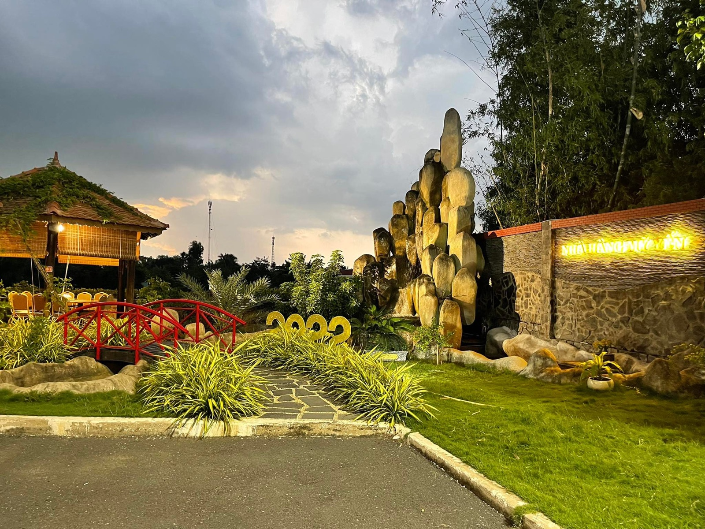
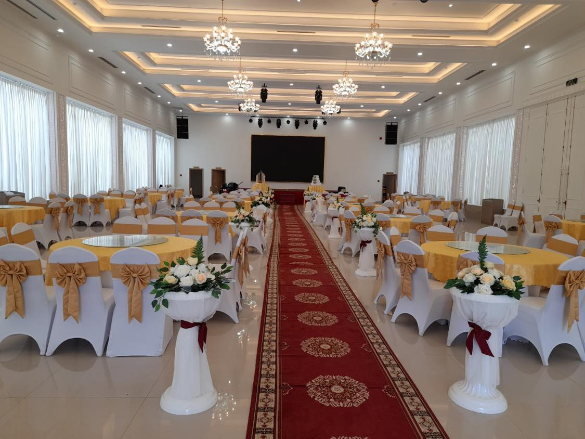

Sân vườn
Gần gũi, thoáng đãng
Những chòi gỗ, lối đi xanh mát và không gian phù hợp cho bữa ăn gia đình, bạn bè và tiệc thân mật.
Chuẩn bị yêu cầu đặt bàn
Không gian Mỹ Yến
Sân vườn riêng tư cho những cuộc trò chuyện dài, đại sảnh trang trọng cho các dịp đông người.
Chuẩn bị yêu cầu đặt bàn
Sân vườn
Những chòi gỗ, lối đi xanh mát và không gian phù hợp cho bữa ăn gia đình, bạn bè và tiệc thân mật.
Chuẩn bị yêu cầu đặt bàn
Đại sảnh
Không gian dành cho lễ cưới, tiệc công ty, mừng thọ, sinh nhật và những buổi gặp gỡ quy mô lớn.
Lên kế hoạch sự kiệnĐặt bàn thật nhanh
Đây chưa phải là xác nhận đặt bàn. Mỹ Yến sẽ kiểm tra chỗ trống và phản hồi trực tiếp với bạn.